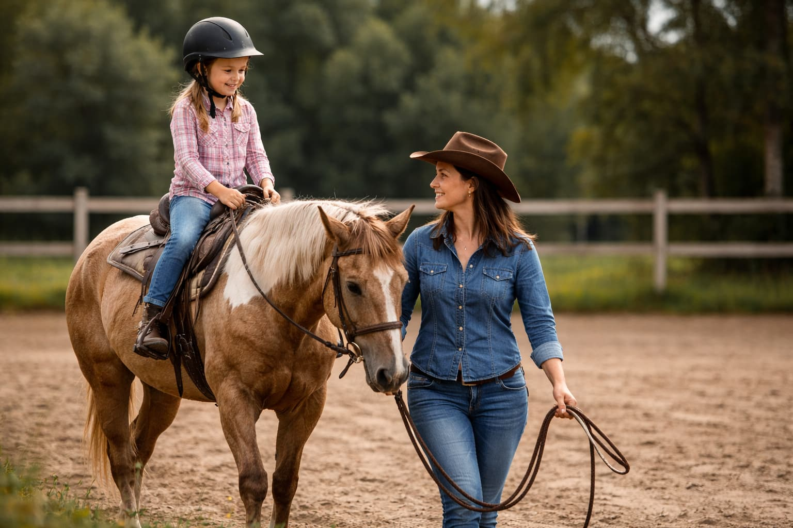

Aloittelijat
Tutustumme hevoseen ja lännenratsastuksen perusteisiin rauhallisesti ja turvallisesti. Opit oikean istunnan, avut ja hevosen käsittelyn alkeita cowboy-hengessä.
- Perustunteet ja istunta
- Hevosen käsittely
- Turvallinen alku
- Rauhallinen eteneminen